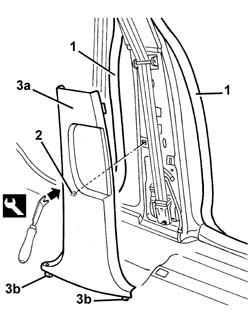

7040H36 central trim lower element - r r
- Path
- Procedures > 70 FITTINGS > 7040 BODYSHELL INTERIOR TRIMS AND FITTINGS > 7040H roof panel lining > 7040H36 central trim lower element - r r
- Kind
- repair procedure (removal / refitting; the operation number is the code)
- Applies to
- all engines; all production periods
- Interactive page
- https://sloeber94.github.io/elrnDB-a156/en/#/3238841
Applies to: all engines; all production periods
 Removing
Removing
 Refitting
Refitting7040L40 front compartment scuff strip - r r
1. Release the door housing seals, by the lower pillar trim.
2. Release the lower trim from the inner retainer using the special tool.
 | Name | Country |
|---|---|---|
1 | Scraper blade | 1.823.015.000 |
3. Remove the lower trim (3a) releasing the retainers (3b). If necessary, lift up the rear running board slightly in the area where it overlaps with the lower pillar trim.

Applies to: all engines; all production periods
Refitting
RemovingCheck that the trim is undamaged.
Fit the lower pillar trim and engage the retainers.
Fit the door housing seals.
Topics linked from this page (1)
Topics that link to this page (15)
- 5505C41 cabin wiring - r r
- 5570T31 aerial coaxial lead - r r
- 5580C40 sidebag sensor (one), lh or rh - r r
- 5580C86 side bag wiring harness (one) lh or rh - r r or replace
- 5580E34 car anti-theft device anti-lift sensor - r r following electrical circuit checke
- 7015B44 tail gate catch control cable - r+r
- 7015B48 Tailgate OPENING CONTROL - R.R.
- 7025B30 boot lid open control - r+r
- 7025B32 boot lid catch cable - r+r
- 7025C32 fuel filler flap catch control - r+r
- 7040H34 central pillar trim - r r
- 7040H37 pillar lower trim finish - r r
- 7040L10 cabin floor carpet - r r
- 7065A12 front seat belt (one), lh or rh, with pretensioner on wheel - r r
- 7065A80 pre-tensioner wiring - r r